Plot central (quantile-based) posterior interval estimates from MCMC draws. See the Plot Descriptions section, below, for details.
mcmc_intervals( x, pars = character(), regex_pars = character(), transformations = list(), ..., prob = 0.5, prob_outer = 0.9, point_est = c("median", "mean", "none"), outer_size = 0.5, inner_size = 2, point_size = 4, rhat = numeric() ) mcmc_areas( x, pars = character(), regex_pars = character(), transformations = list(), ..., area_method = c("equal area", "equal height", "scaled height"), prob = 0.5, prob_outer = 1, point_est = c("median", "mean", "none"), rhat = numeric(), border_size = NULL, bw = NULL, adjust = NULL, kernel = NULL, n_dens = NULL ) mcmc_areas_ridges( x, pars = character(), regex_pars = character(), transformations = list(), ..., prob_outer = 1, prob = 1, border_size = NULL, bw = NULL, adjust = NULL, kernel = NULL, n_dens = NULL ) mcmc_intervals_data( x, pars = character(), regex_pars = character(), transformations = list(), ..., prob = 0.5, prob_outer = 0.9, point_est = c("median", "mean", "none"), rhat = numeric() ) mcmc_areas_data( x, pars = character(), regex_pars = character(), transformations = list(), ..., prob = 0.5, prob_outer = 1, point_est = c("median", "mean", "none"), rhat = numeric(), bw = NULL, adjust = NULL, kernel = NULL, n_dens = NULL ) mcmc_areas_ridges_data( x, pars = character(), regex_pars = character(), transformations = list(), ..., prob_outer = 1, prob = 1, bw = NULL, adjust = NULL, kernel = NULL, n_dens = NULL )
Arguments
| x | An object containing MCMC draws:
|
|---|---|
| pars | An optional character vector of parameter names. If neither
|
| regex_pars | An optional regular expression to use for
parameter selection. Can be specified instead of |
| transformations | Optionally, transformations to apply to parameters
before plotting. If Note: due to partial argument matching |
| ... | Currently unused. |
| prob | The probability mass to include in the inner interval (for
|
| prob_outer | The probability mass to include in the outer interval. The
default is |
| point_est | The point estimate to show. Either |
| inner_size, outer_size | For |
| point_size | For |
| rhat | An optional numeric vector of R-hat estimates, with one element
per parameter included in |
| area_method | How to constrain the areas in |
| border_size | For |
| bw, adjust, kernel, n_dens | Optional arguments passed to
|
Value
The plotting functions return a ggplot object that can be further
customized using the ggplot2 package. The functions with suffix
_data() return the data that would have been drawn by the plotting
function.
Plot Descriptions
mcmc_intervals()Plots of uncertainty intervals computed from posterior draws with all chains merged.
mcmc_areas()Density plots computed from posterior draws with all chains merged, with uncertainty intervals shown as shaded areas under the curves.
mcmc_areas_ridges()Density plot, as in
mcmc_areas(), but drawn with overlapping ridgelines. This plot provides a compact display of (hierarchically) related distributions.
See also
Other MCMC:
MCMC-combos,
MCMC-diagnostics,
MCMC-distributions,
MCMC-nuts,
MCMC-overview,
MCMC-parcoord,
MCMC-recover,
MCMC-scatterplots,
MCMC-traces
Examples
set.seed(9262017) # load ggplot2 to use its functions to modify our plots library(ggplot2) # some parameter draws to use for demonstration x <- example_mcmc_draws(params = 6) dim(x)#> [1] 250 4 6#> $Iteration #> NULL #> #> $Chain #> [1] "chain:1" "chain:2" "chain:3" "chain:4" #> #> $Parameter #> [1] "alpha" "sigma" "beta[1]" "beta[2]" "beta[3]" "beta[4]" #>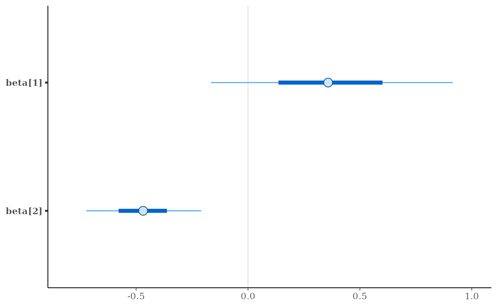mcmc_areas(x, regex_pars = "beta\\[[1-3]\\]", prob = 0.8) + labs( title = "Posterior distributions", subtitle = "with medians and 80% intervals" )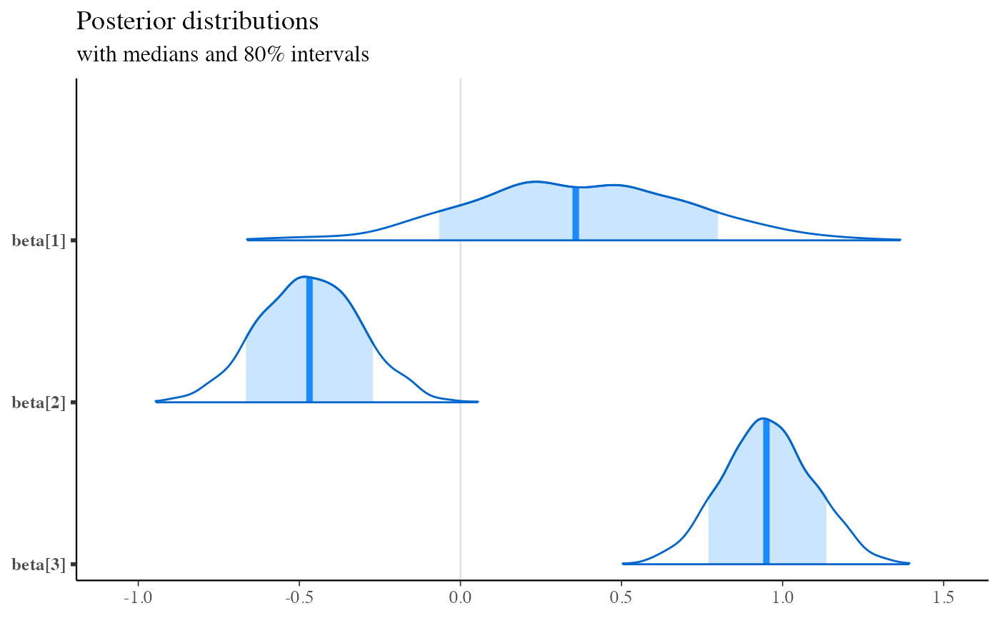color_scheme_set("red") p <- mcmc_areas( x, pars = c("alpha", "beta[4]"), prob = 2/3, prob_outer = 0.9, point_est = "mean", border_size = 1.5 # make the ridgelines fatter ) plot(p)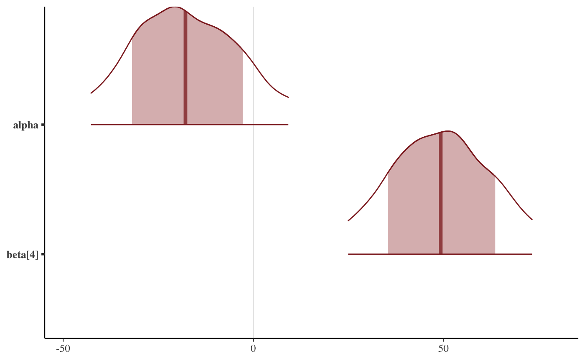# control spacing at top and bottom of plot # see ?ggplot2::expansion p + scale_y_discrete( limits = c("beta[4]", "alpha"), expand = expansion(add = c(1, 2)) )#> #>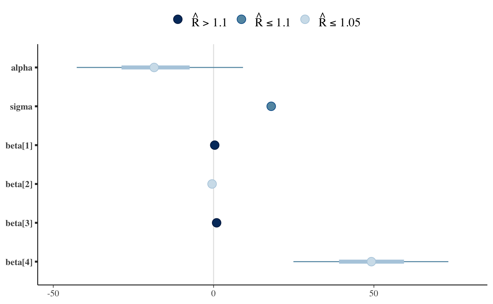#> #>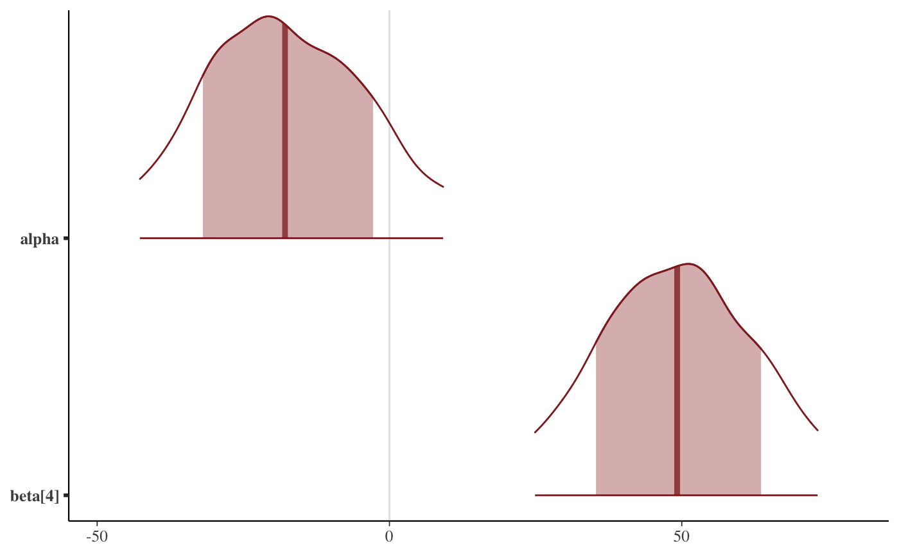# relabel parameters p + scale_y_discrete( labels = c("alpha" = "param label 1", "beta[4]" = "param label 2") )#> #>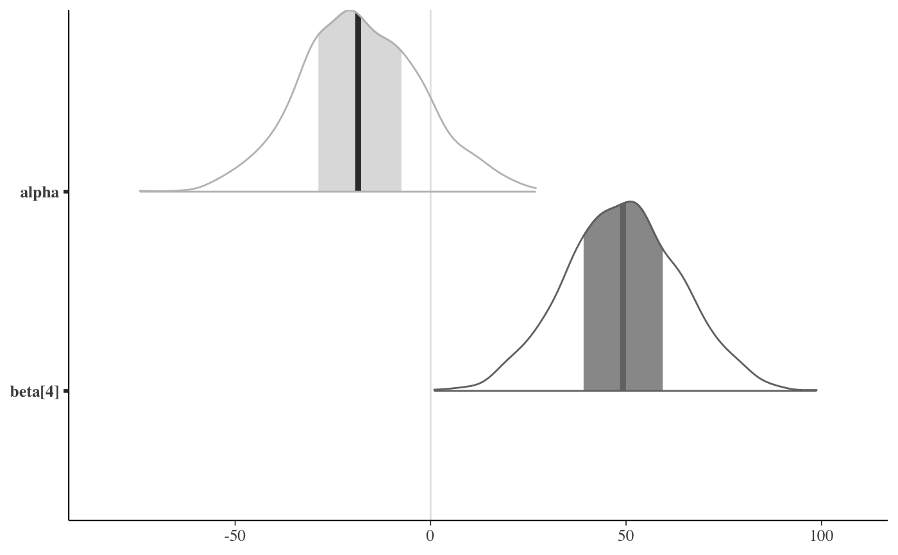# relabel parameters and define the order p + scale_y_discrete( labels = c("alpha" = "param label 1", "beta[4]" = "param label 2"), limits = c("beta[4]", "alpha") )#> #># color by rhat value color_scheme_set("blue") fake_rhat_values <- c(1, 1.07, 1.3, 1.01, 1.15, 1.005) mcmc_intervals(x, rhat = fake_rhat_values)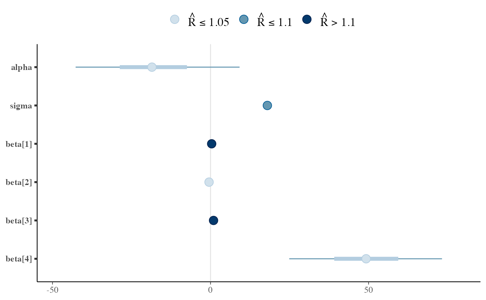# get the dataframe that is used in the plotting functions mcmc_intervals_data(x)#> # A tibble: 6 × 9 #> parameter outer_width inner_width point_est ll l m h #> <fct> <dbl> <dbl> <chr> <dbl> <dbl> <dbl> <dbl> #> 1 alpha 0.9 0.5 median -42.7 -28.7 -18.5 -7.46 #> 2 sigma 0.9 0.5 median 17.1 17.6 18.0 18.4 #> 3 beta[1] 0.9 0.5 median -0.165 0.136 0.358 0.601 #> 4 beta[2] 0.9 0.5 median -0.722 -0.578 -0.469 -0.362 #> 5 beta[3] 0.9 0.5 median 0.718 0.858 0.950 1.05 #> 6 beta[4] 0.9 0.5 median 24.9 39.1 49.2 59.4 #> # … with 1 more variable: hh <dbl>mcmc_intervals_data(x, rhat = fake_rhat_values)#> # A tibble: 6 × 12 #> parameter outer_width inner_width point_est ll l m h #> <fct> <dbl> <dbl> <chr> <dbl> <dbl> <dbl> <dbl> #> 1 alpha 0.9 0.5 median -42.7 -28.7 -18.5 -7.46 #> 2 sigma 0.9 0.5 median 17.1 17.6 18.0 18.4 #> 3 beta[1] 0.9 0.5 median -0.165 0.136 0.358 0.601 #> 4 beta[2] 0.9 0.5 median -0.722 -0.578 -0.469 -0.362 #> 5 beta[3] 0.9 0.5 median 0.718 0.858 0.950 1.05 #> 6 beta[4] 0.9 0.5 median 24.9 39.1 49.2 59.4 #> # … with 4 more variables: hh <dbl>, rhat_value <dbl>, rhat_rating <fct>, #> # rhat_description <chr>mcmc_areas_data(x, pars = "alpha")#> # A tibble: 2,091 × 7 #> parameter interval interval_width x density scaled_density #> <fct> <chr> <dbl> <dbl> <dbl> <dbl> #> 1 alpha inner 0.5 -28.7 0.0221 0.865 #> 2 alpha inner 0.5 -28.7 0.0221 0.865 #> 3 alpha inner 0.5 -28.7 0.0221 0.866 #> 4 alpha inner 0.5 -28.7 0.0221 0.866 #> 5 alpha inner 0.5 -28.6 0.0221 0.867 #> 6 alpha inner 0.5 -28.6 0.0221 0.867 #> 7 alpha inner 0.5 -28.6 0.0221 0.868 #> 8 alpha inner 0.5 -28.6 0.0222 0.868 #> 9 alpha inner 0.5 -28.5 0.0222 0.869 #> 10 alpha inner 0.5 -28.5 0.0222 0.870 #> # … with 2,081 more rows, and 1 more variable: plotting_density <dbl>color_scheme_set("gray") p <- mcmc_areas(x, pars = c("alpha", "beta[4]"), rhat = c(1, 1.1)) p + legend_move("bottom")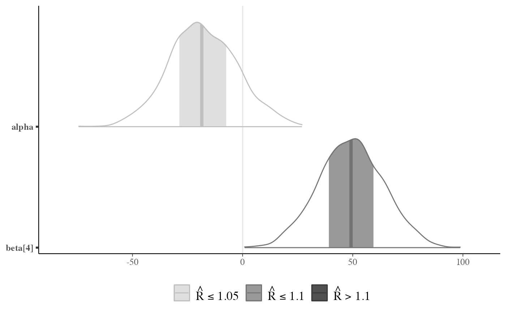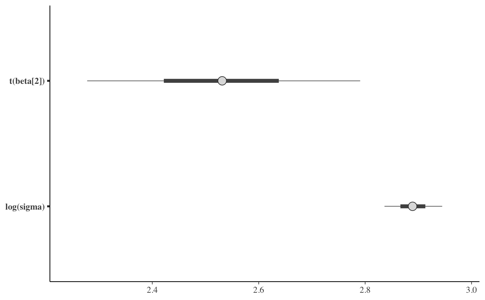# Different area calculations b3 <- c("beta[1]", "beta[2]", "beta[3]") mcmc_areas(x, pars = b3, area_method = "equal area") + labs( title = "Curves have same area", subtitle = "A wide, uncertain interval is spread thin when areas are equal" )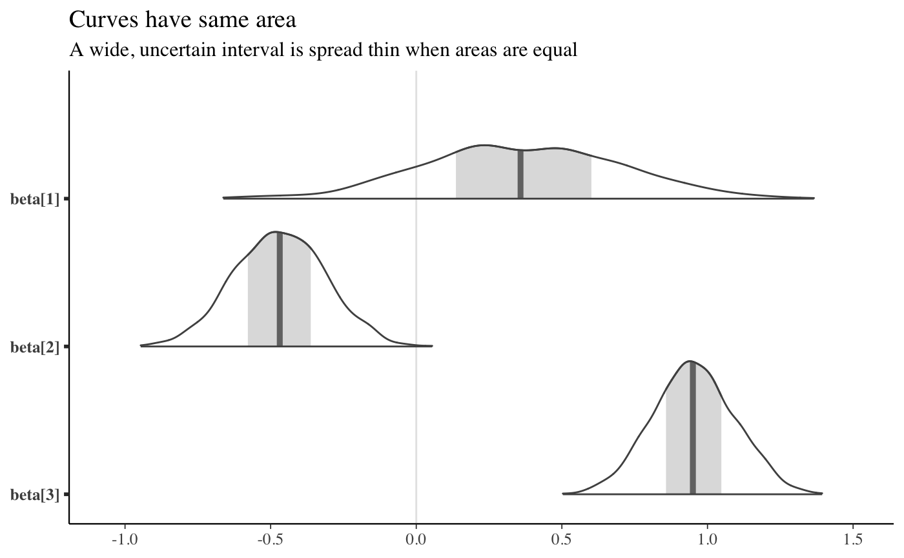mcmc_areas(x, pars = b3, area_method = "equal height") + labs( title = "Curves have same maximum height", subtitle = "Local curvature is clearer but more uncertain curves use more area" )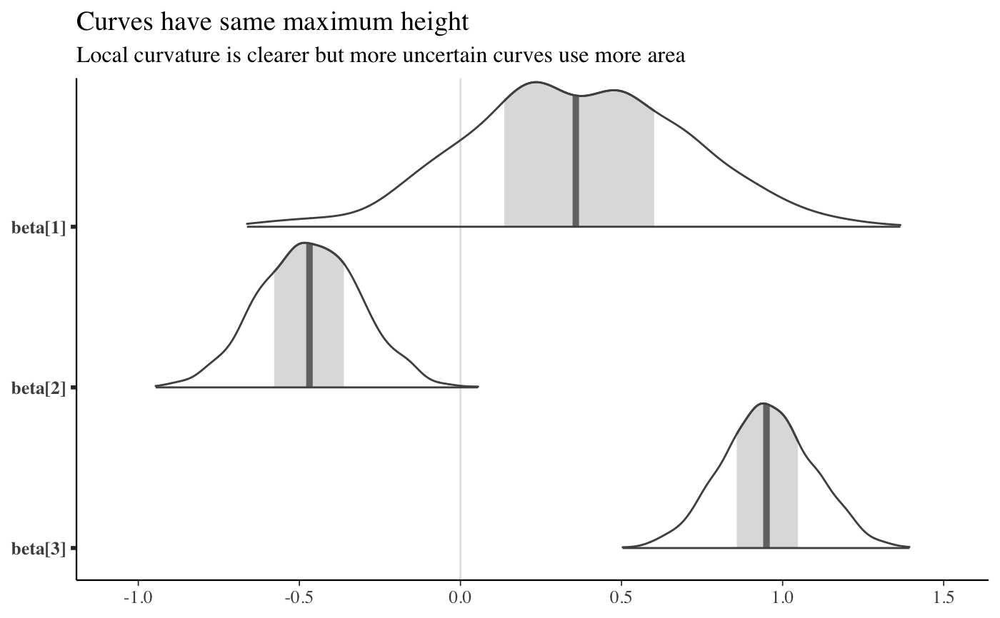mcmc_areas(x, pars = b3, area_method = "scaled height") + labs( title = "Same maximum heights but heights scaled by square-root", subtitle = "Compromise: Local curvature is accentuated and less area is used" )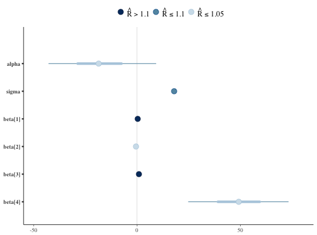# \donttest{ # apply transformations mcmc_intervals( x, pars = c("beta[2]", "sigma"), transformations = list("sigma" = "log", "beta[2]" = function(x) x + 3) )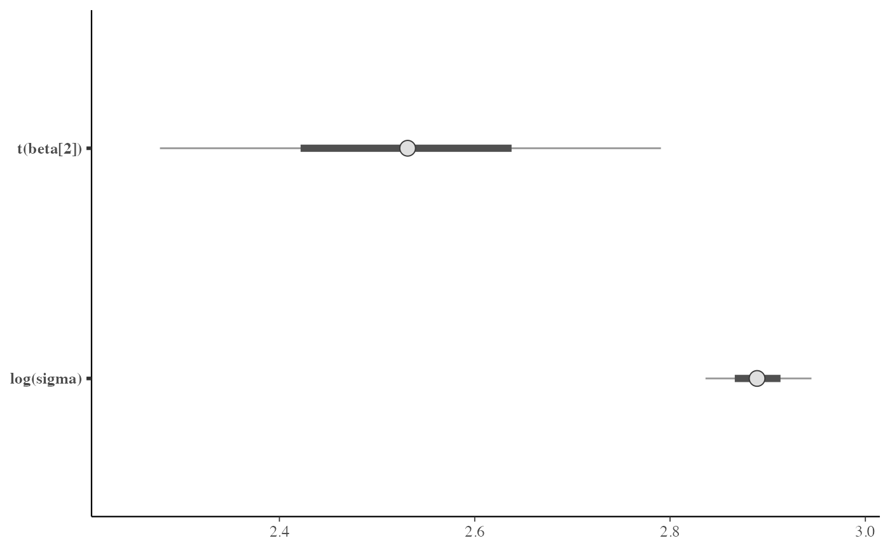# apply same transformation to all selected parameters mcmc_intervals(x, regex_pars = "beta", transformations = "exp")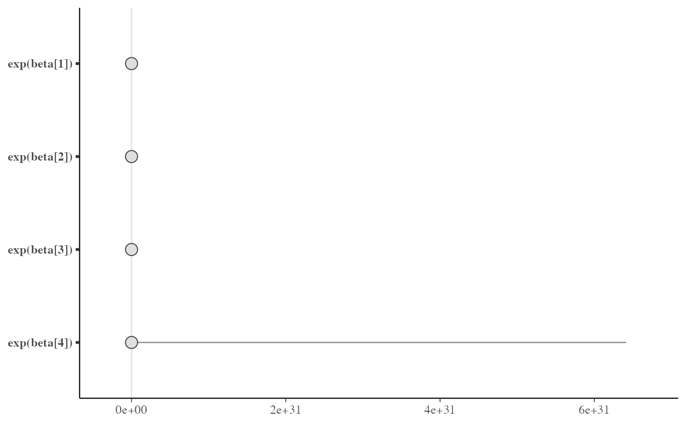# } # \dontrun{ # example using fitted model from rstanarm package library(rstanarm) fit <- stan_glm( mpg ~ 0 + wt + factor(cyl), data = mtcars, iter = 500, refresh = 0 )#> Warning: Bulk Effective Samples Size (ESS) is too low, indicating posterior means and medians may be unreliable. #> Running the chains for more iterations may help. See #> https://mc-stan.org/misc/warnings.html#bulk-ess#> Warning: Tail Effective Samples Size (ESS) is too low, indicating posterior variances and tail quantiles may be unreliable. #> Running the chains for more iterations may help. See #> https://mc-stan.org/misc/warnings.html#tail-essx <- as.matrix(fit) color_scheme_set("teal") mcmc_intervals(x, point_est = "mean", prob = 0.8, prob_outer = 0.95)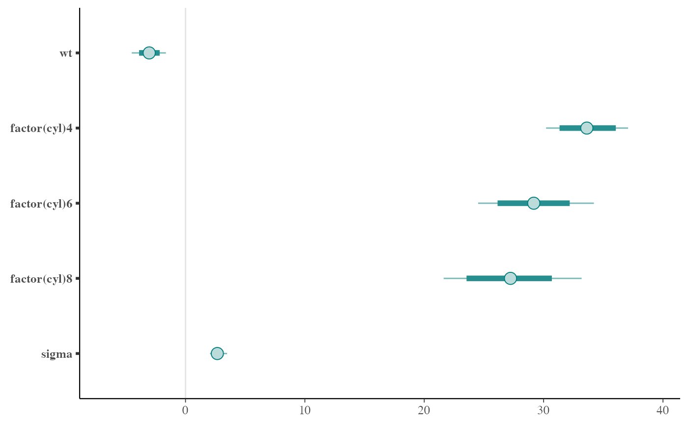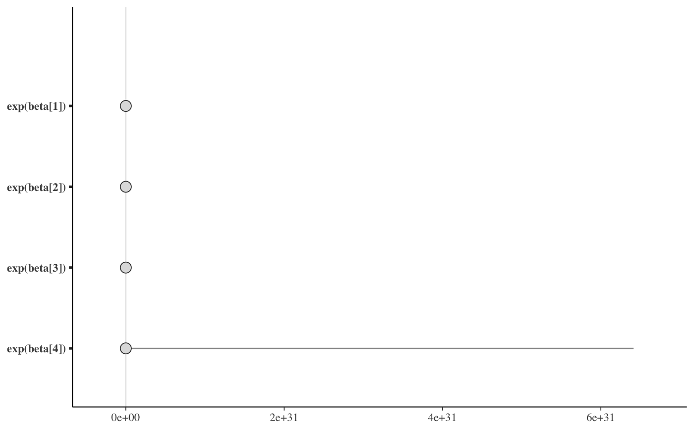# } # \dontrun{ # Example of hierarchically related parameters # plotted with ridgelines m <- shinystan::eight_schools@posterior_sample mcmc_areas_ridges(m, pars = "mu", regex_pars = "theta", border_size = 0.75) + ggtitle("Treatment effect on eight schools (Rubin, 1981)")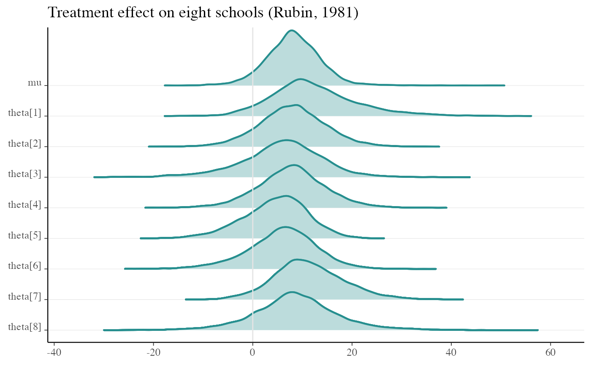# }